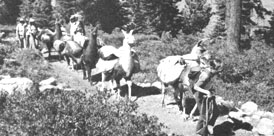

PHOTO BY GUY PETO
THE B & B'S OF IRELAND
According to MOTHER-reader Eileen Perusek, it's possible to visit Ireland economically by taking advantage of the BedandBreakfast accommodations that are popular there.
"Two of us," writes Eileen, "drove a rental car through the Republic and spent most of our vacation nights in clean and comfortable private homes. All of the 'suites' have sinks with hot water, and though the toilet facilities are shared among several rooms, we never once even had to wait to use them.
"In 1979, the average price for overnight lodging for two people was 10 pounds. (At that time, a pound went for $2.06, but it's only worth about $1.80 today!) And the price includes a huge breakfast . . . typically consisting of cereal, eggs, toast, sausage, bacon, wheat bread, juice, coffee, and tea. Fortified by the hefty morning repast, we were usually able to get by with just one other meal daily. And for that, we often enjoyed a picnic along the way . . . or splurged, occasionally, on an evening meal in a restaurant.
"While we were in Dublin, however, we found the YWCA at Sandymount to be a wiser lodging choice than the Bed-and-Breakfast accommodations in that metropolis. It's only a short walk from the Irish Sea, and bus service to the City Center is just a block away . . . so we were able to park our car at the 'Y' and use the doubledeckers to avoid the urban traffic.
"Remember that although B & B's are plentiful in most areas, it's best to search one out early in the evening, since they fill up fast ... and are especially heavily booked during the June-through-September peak season. (We found this to be particularly true of those available near the seaside resort of Ballybunion at the mouth of the River Shannon and at Killarney, which is the center for tours of the Ring of Kerry.)
"There's a fringe benefit to lodging at B & B's too. . ." Eileen adds, "in the form of the delightful evenings spent talking to the owners. In fact, we found all the Irish people, including the Irish Tourist Board (which has an office in nearly every city), extremely helpful and friendly."
A HIKE WITH A LLAMA
Hiking in the Sierra Nevada back country or exploring California's undeveloped beaches becomes especially memorable when you share the trail with gentle, curious, and extraordinarily sure-footed llamas, the traditional pack animals of the Andes.
From April through October, Mama's Llamasfeaturing animals by the names of Gringo, YoYo, Prince, Cholo, Andy, Pinkie, Sirius, Louie, and Illampu-has scheduled a number of three-to eight-day treks in northern California's forests and coastal areas. The terrain covered varies in difficulty from level trails to high mountain passes . . . and the trips range in cost from $195 to $519 per person. And, of course, the llamas carry all the cooking, eating, and camping gear for each trip's 8 to 14 participants.
For more information on these unique camping vacations, write or call Mama's Llamas, Dept. TMEN, P.O. Box 655, El Dorado, California 95623, 916/622-2566.
TIPS FROM A TREK
Finally, here are a couple of helpful hints we picked up from some hikers who joined MOTHER's recent Nepal adventure.
First of all, we were very impressed when Nicki Sue Rutt finished all her obligatory postcards to the folks back home in record time. She had, you see, typed the names and addresses on peel-off labels before she left on the trip.
Then, during a period of wet weather on the trail, we noticed that Miriam Levenson always managed to have a dry towel, because-instead of carrying the usual terrycloth variety-she'd packed three quick-drying, lightweight, absorbent diapers for that purpose.
Remember, you receive a free one-year subscription to MOTHER if your travel tip is published in this column. Write to Getting There, THE Mother Earth News(restricted), P.O. Box 70, Hendersonville, North Carolina 28791.
|
 |
|
|